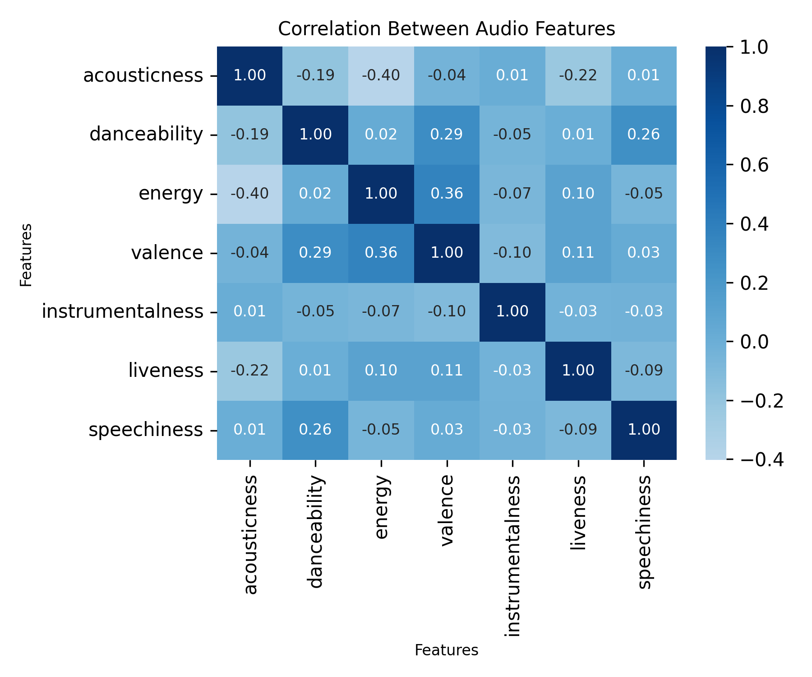
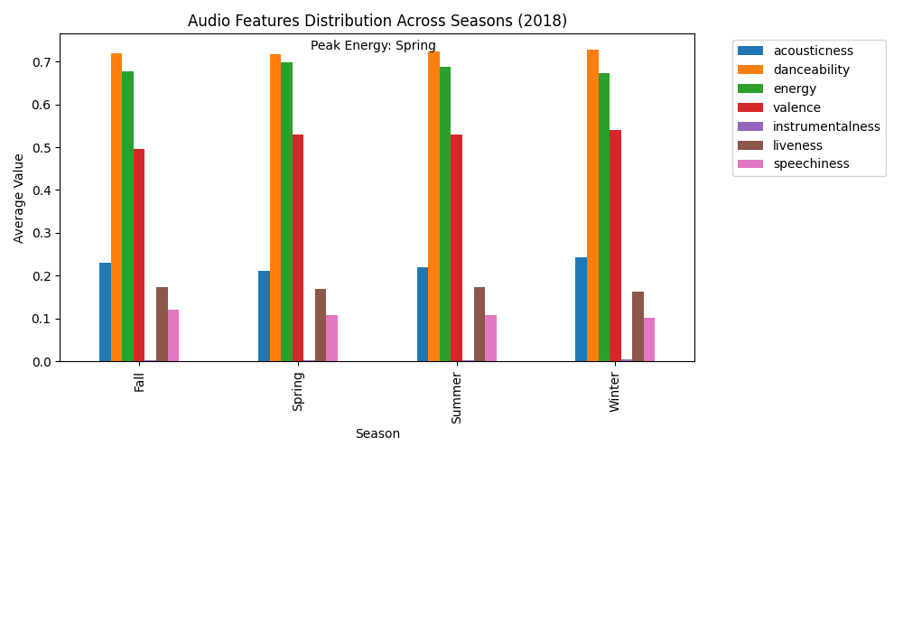
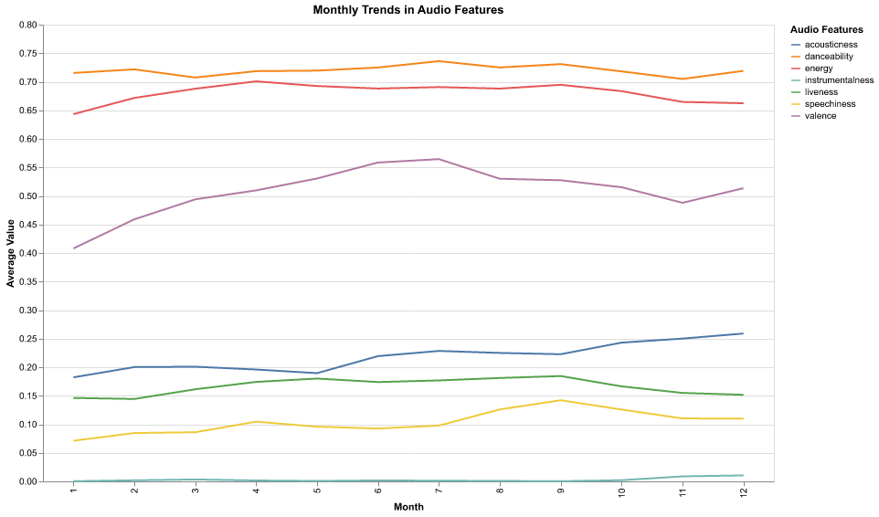

Static Visualizations
Correlation Heatmap

This heatmap reveals interesting relationships between audio features in Spotify tracks. Key insights include:
- Weak to moderate correlations overall, suggesting these features are largely independent
- Energy and acousticness show the strongest negative correlation (-0.40), indicating that more energetic tracks tend to be less acoustic
- Danceability shows positive correlations with both valence (0.29) and speechiness (0.26), suggesting upbeat, vocal-heavy tracks tend to be more danceable
- Instrumentalness shows very weak correlations with other features, indicating it's largely independent of other musical characteristics
Seasonal Distribution

The seasonal distribution reveals clear patterns in music preferences across seasons:
- Danceability (orange) maintains the highest average values consistently across all seasons, staying above 0.70
- Energy levels (green) peak in Spring, contrary to the common assumption of Summer having the most energetic music
- Valence (emotional positivity) shows moderate stability across seasons, with slight variations
- Instrumentalness, liveness, and speechiness maintain consistently lower values throughout the year
- The annotation highlights "Peak Energy: Spring", marking the season with the most energetic music
Monthly Trends

The monthly trends provide a more granular view of how music features evolve throughout the year:
- Danceability (orange line) remains the most consistently high feature, hovering around 0.70-0.75 throughout the year
- Valence (purple line) shows a gradual increase from winter to summer months, peaking around month 7 (July)
- Acousticness (blue line) shows a slight upward trend towards the end of the year
- Instrumentalness, liveness, and speechiness (lower lines) maintain relatively stable, lower values throughout the year
- Most dramatic changes occur in the middle of the year (months 6-8), suggesting summer months have the most dynamic variation in music characteristics